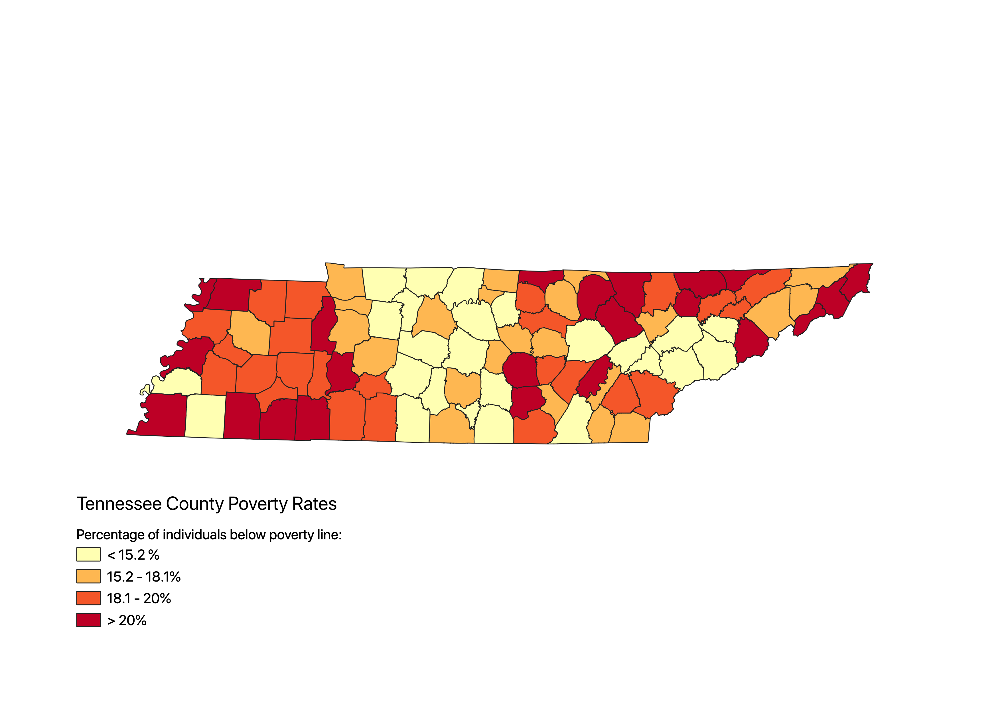
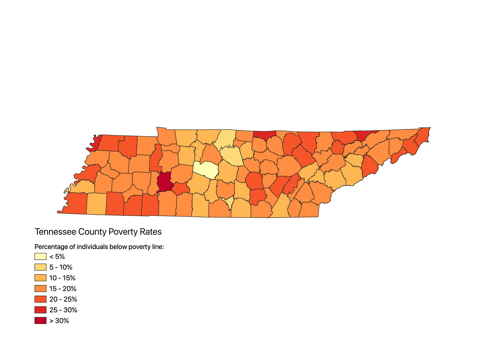
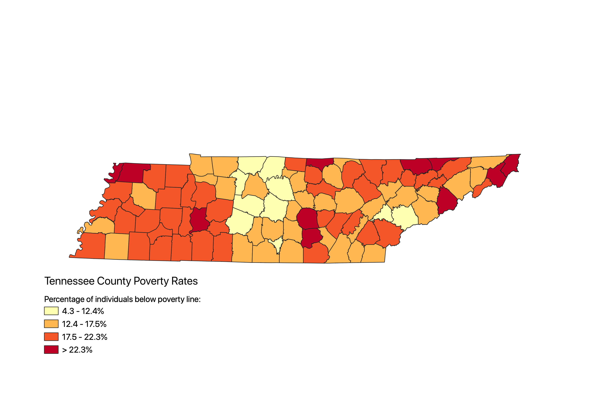

Homework 8: Census Data Ratios and Classifications
Robert Harlan
Quantile Breaks

This map shows the proportion of individuals living below the poverty line in each county in the state of Tennessee. The tan colored counties have relatively low poverty rates, and orange and red counties have higher rates. This map shows a quantile categorization of the data, meaning each percentage range shown on the map has an equal number of counties represented. This method is useful because it shows the poverty rates for 95 counties broken into 24 county quarters, making it easy to compare counties at the statewide level. I found it interesting that the 50% of counties with lower rates seemed to be grouped together in the central and southern parts of the state, and that the 50% of counties with higher rates were also grouped together in the western and eastern edges of the state.
Pretty Breaks

This map shows the number of individuals living below the poverty line in Tennessee categorized with pretty breaks. This means the county rates are categorized using simple and clean ranges. This map is using increments of 5%. I like this categorization because it shows breaks more gradually in the data, and compared to the above map, this easily conveys the proportion of counties within certain poverty percentage ranges. For example, you can visually determine that the 15-20% poverty range is most common in the state just by seeing that a majority of the counties are the middle orange color.
Natural Breaks

This map shows the number of indivuals living below the poverty line in Tennessee categorized using natural breaks. This break method produces an almost hybrid version of the above two maps. While not perfectly dividing the counties into four catories, it takes the natural breaks in the data to show the geographic trends as the outliers. Most of the western portion of this map falls into the second highest 17.5-22.3% range, wheras in the quantile map many more counties in this region fell into the highest category. I think this is the best method for visually showing how a counties geographic location has a correlation with its populations poverty rate, while also showing where the lowest and highest few counties are located. The noticable differences in these maps make me think about how identical data can be shown in many different ways that may or may not infuence a viewer's perception of the data.
Data used for this project
CSV dataset
Link to shapefile